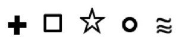
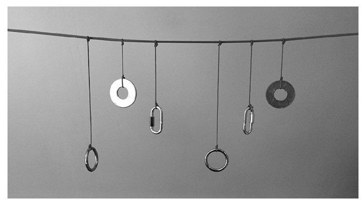

一个人脑中发出的电化学信号如何影响他人？
在《人们为什么相信怪异之事？》一书中，迈克尔·谢尔默讲述了他访问启迪研究协会之事。启迪研究协会位于弗吉尼亚州的弗吉尼亚海滩。该协会主要研究20世纪著名通灵之士埃德加·卡里斯，并自1931年以来一直教授通灵力量。谢尔默听了一次关于超感知觉（ESP）和超自然力量的讲座后，他自愿成为接收通灵信息的志愿者。教员向他们解释，有些人天生就有超自然力量，而其他人只需通过训练。[186]教员向谢尔默和其他34名学员发了一张记录表，要求他们把注意力集中在发信人的前额，并记录收到的信息。此次试验分两轮，每轮25条信息。每条信息可用如下符号代表：

。第一轮时，谢尔默老实地试图接收和记录该信息，但是到第二轮时，他将所有信息都标记为符号。第一轮他的得分是7分，第二轮3分。根据启迪研究协会的规定，得分高于7分表示该名选手拥有超感知觉。首先，为了使这个实验看上去不那么荒谬可笑，对于的确没有收到任何信息的人来说，实验应该有第六个符号——空白。其次，加入空白符号后，我们可以通过实验来帮助了解与六个符号匹配的可能性：取两个骰子，骰子的每一面上标上一个符号。每发送一次消息，让一名学生抛掷两个骰子，并记录两个骰子最后落地时是否是同一个符号朝上。
两个骰子落在同一个符号上的概率是1/6，因为可能的36个结果中符号可能相同的只有6个。如果34名学生每人抛掷一对骰子25次，结果会怎样呢？在34名信息接收志愿者中，我们多久能看到7次符号相同的情况呢？我们可以看到一条钟形曲线，表明任一学生7次得到符号相同的结果的可能性很大。换句话说，如果你任意选择一个符号，在25次抛掷中你很可能有3～7次成功。事实证明，任何人都有超过5成机会多于5次成功。
似乎只有5个符号代表的信息不够严肃认真。毕竟，本章中任何一个句子都比只有5个任意符号表示的信息复杂得多。但是如果这样想就会不得要领。如果只使用这5个符号超感知觉也起作用，那么这也应该视为一种信息沟通。钢琴演奏10分贝的音符G和E听起来和贝多芬第五交响曲开始的4个音符不一样，但这就是听觉。别忘了，亚历山大·格雷厄姆·贝尔首次成功电话实验时，他对着话筒大声喊出了简单的9个字：“沃森，来这里，我想见你。”那是1876年3月10日。电话另一端的托马斯·沃森几乎听不见贝尔发出的沙沙声。当时谁会相信声音可以通过电子方式传播？谁又会相信我们可以用无线电话将声音传递到世界上的任一角落？所以我们相信什么，不相信什么，对此必须慎重对待。也许仅有5个符号的传心术标志着对未知事物的认知。我们对大自然一直怀有偏见。伊丽莎白·吉尔特在他的著作《万物的签名》中也提到了这一点，她说：“华莱士书中写道，第一个看见飞鱼的人或许以为他看到了奇迹——而第一个描述飞鱼的人无疑是骗子。”[187]书中的华莱士指的是英国动植物学家阿尔弗雷德·罗素·华莱士，而所描述的暗指一名英国海军军官的真实故事，他声称在返回英国途中曾在巴巴多斯看到飞鱼。但在现实生活中，华莱士是马来西亚热带雨林中黑掌树蛙，也就是飞蛙的发现者。[188]
超感知觉包含心灵感应和透视力，指通过不寻常的身体感官来传递和接收心灵信息。直觉就是其中一种。但超感知觉还包括通过采用现有科学知识之外的渠道接收信息。对于一些真正的支持者来说，这些渠道将现在与过去、过去和死亡联系在一起。尽管近一个世纪以来证明人类拥有超感知觉功能的统计实验以失败告终，但超心理学家还没有放弃人类拥有超感知觉的想法。[189]
许多著名的心理学家通灵之士与媒体有着良好的联系。擅于星相的肯尼·金斯顿是一个广播脱口秀节目的主持人，他还是梅尔福·格里芬和《娱乐今宵》节目的定期嘉宾。金斯顿通过电视促销节目宣传他的通灵热线，声称他与约翰·韦恩、温莎公爵和公爵夫人，埃罗尔·弗林、奥森·威尔斯和玛丽莲·梦露都有通灵联系。他通过400美元一场的与死者通灵联系的活动赚得满盆满钵，其中包括埃罗尔·弗林和奥森·威尔斯，他们仍然经常出入弗林活着时常光顾的好莱坞餐厅——穆索法兰克烧烤餐厅。我没说他是骗子，他可能是，也可能不是。如果有办法与死者对话，能举办降神会预测未来不是更好吗？
曾几何时，人们吞下磁铁来吸引爱情。为什么不可以呢？既然磁铁具有奇迹般的远距离吸引力，不难理解人们为什么相信灵魂会被这种不可理解的磁力所吸引。我们不屑地认为这是过时的传说，觉得荒诞。但自19世纪初以来，我们已经知道电流会产生磁场，反之亦然。所以我们也应该一直认为，作为电化学活动的脑部活动会在人的头脑外部周围产生磁场。随着当今神经科学的飞速发展，越来越精细的大脑成像工具使我们想起十年前眯着眼睛费力看到的图像。我们现在有脑磁扫描仪的证据表明，人脑表达的情绪的确在人脑外部产生了磁场。虽然这些磁场相对较弱，但它们可能与脑波活动一起，利用无线电波将信号传递出去。我不怀疑它的可能性。一个人很可能会将爱的信号传递到他或她的大脑之外。就像手机信号一样，这些信号可能会到达很远的地方。问题在于我们对传输信号的解释。可以解释为他们是将信息传递给另一个人吗？要真正传递爱的情感，这些信号必须被解码为“爱你”；不仅仅是爱，而是向信息接受者传递“我爱你”。想想看，了解一个人的爱是多么困难。如果传达爱情只是大脑信号的心灵感应，那么每一部浪漫小说都将变得枯燥无趣。
心灵感应或传心术是通过能量转移这一异常过程来传递信息的。现有的身体或生物机制无法解释这一过程。传递的信息可以是关于过去、现在、未来或与死者的通灵联系。它通过改变状态传递情感和运动知觉能力，或者通过进入人的潜意识智慧来获取信息。[190]
在巴西，超过90%的人相信来世，相信活着的人能和死去的人交流。圣保罗市附近的乌贝拉巴市发生过一个真实的故事：罪犯头目琼奥·罗萨和莱尼瑞·奥丽薇娅是一对恋人。罗萨允许自己和其他女人约会，但他不能接受奥丽薇娅和其他男人约会。出于嫉妒，他跟踪了奥丽薇娅和她的另一个男朋友。在随后的冲突中罗萨被杀害。奥丽薇娅和她的新男友被指控谋杀。奥丽薇娅沉浸在悲伤中，她仍然爱着罗萨。她咨询了一位通灵之士，他带给她一封阴间的来信。辩护律师在审判中告诉法庭：在信中，死者坦白是他的嫉妒导致了他的死亡。信中提到了只有和他关系亲密的人才能知道的细节。
巴西的法院接受由通灵之士撰写的来自死者的信件，将它作为证据的一部分。在巴西的这种信仰中，不存在金钱交易，这完全是真正的信仰。灵媒这样做也是为了坚定不移的信念。在一个如此坚信来世的社会里，陪审团乐于接受来自阴间的信。结果自然是奥丽薇娅和她的男朋友被无罪释放了。[191]
相信存在超感知觉的支持者给出了一些经典案例。厄普顿·辛克莱在其著作《精神广播》中记载了一个著名的实验：辛克莱相信他的第二任妻子玛丽·克雷格·金布罗有通灵力量。为了检验这种特异功能，他要求玛丽在他画290幅画时重画他的画。令人震惊的是，她成功重画了65张，部分重复155张，只有70张失败。[192]但就是这样！你必须计算失败和成功之比。
另一个著名的实验可以追溯到1937年。作家哈罗德·谢尔曼和探险家休伯特·威尔金斯两人首次通过日记绘画和写作来心灵传递对方的心理图像和想法。这种每日心灵感应持续了161天，当时谢尔曼在纽约，而威尔金斯在北极探险。[193]1938年2月21日，他们俩都写道，寒冷的天气耽误了他们的工作，他们看见某人的手指脱了皮，他们和朋友一起喝酒，抽雪茄，他们都牙痛。[194]事实上，这两篇日记的相似程度约为75%。[195]
20世纪初加入了一些受人尊敬的超感知觉支持者，他们有些相信存在能与死者沟通的通灵力量。我们提到过辛克莱，但想象一下下面这些名人的卓越贡献：美国著名心理学家威廉·詹姆斯、法国著名哲学家亨利·柏格森、英国著名小说家阿瑟·柯南道尔爵士、英国著名作家奥尔德斯·赫胥黎、法国著名作家儒勒·罗曼、英国著名小说家H.G.威尔斯、英国著名博物学家阿尔弗雷德·罗素·华莱士、英国著名学者吉尔伯特·莫里、英国著名作家亚瑟·库斯勒和奥地利精神分析学家西格蒙德·弗洛伊德。这些著名的心理学家、哲学家和作家能够左右其他人的想法，让他们不假思索地加入进来。但他们不是怪人，而是按照20世纪公认的科学标准严肃对待自己作品的诚挚的人，不过他们没有任何正统实验支持。
到了20世纪30年代，高校和杂志都开始认真对待通灵经历。杜克大学从牛津大学和哈佛大学聘用了心理学家威廉·麦克杜格尔，由他带头建立实验室研究通灵力量。至少有两本学术期刊发表文章支持动物有透视力的观点，一篇研究有心灵感应的猫，另一篇是母马通过鼻子识别字母和数字积木来说明通灵信息。[196]
约瑟夫和妻子路易莎·莱茵在《异常与社会心理学》杂志上发表了一篇关于马的研究的文章。他们指出：“所有发现都符合（心灵感应），任何其他假设都站不住脚。”[197]也许受到亚瑟·卡农·多伊尔关于心灵感应讲座的启发，莱茵夫妇遵循福尔摩斯在小说《四签名》中的名言：“消除一切其他因素，剩下的就是真相。”事实上，问题就在于要知道什么时候已经没有可消除的因素了。
这让我想起大卫·奥伯恩戏剧中一句荒谬的台词，这个戏剧是几年前流行起来的，剧中数学家哈尔正在研究数学定理证据，他说他无法找出这个证据的错误，所以它就是对的。这在逻辑上相当于说如果这不对，那么就能找到错误。英国作家路易斯·卡罗尔的柴郡猫可能会坏笑着赞同。他曾说过，狗没有疯，而他不是狗，所以他得出结论说他疯了。这种逻辑只会在小说故事中发生。
超感知觉的核心是超心理学家所说的超心理（Psi）现象。Psi是希腊字母表中的第23个字母，读音与“psyche（心智）”的第一个音节相似，指无法用已知的自然法则来解释的心灵交互。20世纪的科学哲学家查尔斯·邓巴·布罗德认为，超心理现象的存在与关于空间、时间和因果关系的科学法则相冲突。他1949年在《哲学》杂志上发表的论文提出了9点理由，认为超心理现象与传统推理和自然法则相冲突。[198]超心理现象的支持者承认这种现象完全不符合现代物理学，但他们接受这种矛盾冲突。莱茵指出，与超心理现象的调查结果相比，相对论更具革命性，和当代思想完全对立。[199]
1937年，罗纳德·艾尔默·费希尔出版了一本书，内容关于通过科学实验设计，用严谨的数值测量来区分巧合和可靠预测的结果。[200]他的目的并不是反驳超感知觉，而是通过原始数据，手把手地教我们如何接受或排除巧合。
费希尔在书中编撰了一个英国茶会的故事。茶会中无意中听到一位女士说她可以根据味道判断她杯中是先放牛奶还是先放茶。毫无疑问，这需要有非常敏锐的味觉辨别力。费希尔在书中设计了一个可行的实验。在现实世界中，我们或许会完全相信她说的话，不过从更合理的数学模型角度来说，我们倾向于更灵活，认为很多时候她能够区分是先放牛奶还是先放茶叶。费希尔明白，即使是很多时候会发生的事件也可能发生在纯粹随机的情况下。费希尔的真正意图是设计实验，注意主观错误，但他同时也关注理想数学和现实世界中不完美实验之间的联系。
实验中共有8杯茶，其中4杯先放牛奶，后放茶；4杯先放茶，后放牛奶。显然，如果那位女士能说对8杯茶的顺序，那么实验者就会相信她的确可以分辨。但是如果她有一杯说错了呢？这是否与她的话相矛盾？或许不是，但如果她错了两个呢？
可以用数学来确定结果。这位女士信誓旦旦，没有给自己留有一点出错的余地。（如果我们经常不把话说这么满，世界不就完美了吗？）毕竟，在开始几次尝试之后，她的味蕾会发生变化，牛奶分子也会变化。先放牛奶或是先放茶造成的差别非常细微，为了公平起见，我们最好不要太较真，允许她犯少量错误。[201]
现代统计学始于19世纪后期。其前提是随机变量分布在一系列可能性上。声称能够区分先放牛奶还是先放茶的女士和声称可以预测胎儿性别的具有透视眼的人不同。他们所声称的本质在于区分随机猜测和真正的透视能力。毕竟，胎儿的性别是随机决定的，猜测也是如此。那位告诉我们可以分辨不同茶的味道的女士依靠的是她的味蕾和对自己能够品尝出不同味道的自信心。
我们视巧合为被超能力设计的命中注定。我们怀疑两个复杂现象之间的相关性。而真正的问题是，我们自然而然地倾向于在没有关联的事物间建立联系。
这就是概率和统计的本质。我们会犯错，而统计数据允许一定量的变通。统计方法非常精妙。费希尔认为，统计证实可以证明受质疑的事实。他写道：[202]
如果从统计学角度确认超能力现象，这是一种很好的理性研究。但是迄今为止关于超能力现象唯一的统计学实证研究结果严重依赖笔误、无意识的感官反应和很大的偶然性。在我们看到合理的统计学证实之前，超能力现象仍属于魔法世界，科学家仍认为这是巧合，是魔法师的魔法棒发挥作用的结果。魔术师可以给观众带来迷惑人心的表演，这些表演似乎与物理定律相矛盾——悬浮的身体，用锋利的军刀刺穿身体，从远处猜扑克牌——但我们知道这些都是骗人的把戏。
有人要我们不要质疑通灵术从一个大脑传到另一个大脑的过程。如果科学能发言，它会要求说明大脑中的电化学活动如何转化为能穿越空间的原始数据信号，这些信号又如何再转化为神经元中的电化学活动。美国人口遗传学家乔治·普莱斯曾嘲讽地描述超能力现象如何传递一副扑克牌中某张特定牌的信息：除了神灵、幽灵或者不管叫什么灵，谁也无法合理解释这些细节。那张牌是神灵选择的。神灵用适当的电化学形式将信息植入脑中。当神灵与特定的人一起工作时，这种能力就会消失。总而言之，超能力虽然披着科学的外衣，但仍然充满了魔法的痕迹。[203]
要求我们不去质疑真相，就是要求我们接受魔法、奇迹或是超自然作为解释。除了魔术师表演的把戏之外，“魔术”这个词指的是源自超自然能力的巧合，是违抗既定物理规律的力量。舞台上的表演者把围巾变成白色的兔子。魔术师霍迪尼的把戏藐视了物理法则的识别力，他还对超感知觉概念不屑一顾。[204]
超距作用常态
16世纪时，人们努力从亚里士多德的物理准则中理解普遍规律。亚里士多德认为，宇宙中一切运动着的物体都将回到自然位置。在艾萨克·牛顿发现万有引力定律之前，人的命运与天体的运动有关。牛顿让我们了解到，苹果下落的原因和行星相互吸引的原因相同。人的命运和天体的运动不再联系在一起。牛顿出生时，《钦定版圣经》第一版宣称：太阳升起又下落，回到它升起的地方。风向南吹，又转向北方。它不停地盘旋，最后按照它的路线回到原点。所有河流流入大海；但大海却不会满溢；河流继续流到河流出发的地方，然后再流入大海。[205]
在弥尔顿的《失乐园》中，上帝派天使拉斐尔下到伊甸园去劝诫亚当并揭穿撒旦的身份。夏娃摆上伊甸园最好的水果和肉款待拉斐尔，餐桌上亚当询问拉斐尔世界怎么形成的，行星如何运动等问题。拉斐尔解释说：[206]
弥尔顿刚好在1665年大瘟疫袭击伦敦之前完成了《失乐园》，当时牛顿离开了剑桥，回到他孩提时所住的伍尔索普村避难，在那里他发现了万有引力定律，是万有引力致使行星在轨道内运动和苹果坠落。
但到了18世纪后期，重力开始被认为是物质的属性：两个物体相互吸引，因为它们相隔一定的距离，并且包含着一定量的物质。他们具有一定的“量”而相互吸引。牛顿认为万有引力是一种依赖于与其他物体的关系的现象。一个孤立的物体不具有万有引力，但是当另一个物体靠近时，它会对对方展现吸引力，对方也会回以吸引力。
普遍的科学观点认为宇宙的运行有一定的法则。然而，与行星的运动不同，生物法则依靠的变量太多，难以给出完美的解释。苹果从树上掉下来，这一现象遵循牛顿简单的运动定律，但苹果本身是由大量非常复杂的分子集合而成，而分子又是由大量复杂的原子相互吸引组合而成。
我们现在生活的这个世纪，超距作用很正常。而在20世纪，随着广播电视的发展，声音和图像信号奇迹般地穿过几乎空荡荡的空间，随着无线电波传输数千英里远。我们已经习惯手机和WIFI，不会去质疑信息的来源和去向。我们不再质疑超距作用的新形式，它们眨眼之间就能把画面和声音从北京传到纽约。要想简单了解这一切是怎么发生的，就想想一个人的声音是如何被另一个人听到的吧。
数学家克里斯托弗·塞曼曾向我展示过耳朵的工作原理模型。在一间大房间中紧紧系上一根绳子（图14.1）。在绳子的一端绑上几根长度不等的吊绳。在每根吊绳的末端挂上重两磅的砝码。在紧绷的绳子的另一端挂上同等重量的砝码，砝码顺序随机。当整个装置都静止不动时，小心拉动任一砝码，然后松手。结果会怎样？除了整个装置轻微的运动之外，只有两个悬挂的砝码运动比较明显：两个吊绳长度相等的砝码。为什么？因为被拉动的砝码将频率传递给了紧绷的绳子，从而使任何（但仅仅是）有共振频率的悬挂砝码产生共振。

图14.1 共振频率模型
这个小实验没什么新奇。钢琴调音师每天都会使用这个原理，通过敲击相邻八度音阶的琴键来调节某个八度音阶的琴键。任何一个音符的泛音都来自具有共鸣频率的钢琴弦的振动。
这正是人耳的工作原理。俄罗斯女中音歌唱家奥尔加·博洛迪纳正在演唱歌剧《狄多和埃涅阿斯》中《狄多的悲歌》咏叹调：当我躺在地上……她从喉咙大声唱出音符，引起嘴巴前方的空气振动。这些振动穿过剧院，传到观众的耳朵。耳蜗中的纤毛与气流产生共鸣。运动的纤毛形成流体运动，转换成了电信号，从而激发了听者的听觉神经。
古代的人们一定会思考，在没有任何设备连接的情况下，一个人的声音是如何传到另一地方的人的耳朵里去的呢？我孩提时的漫画英雄是迪克·崔西，我对他有手表可视电话感到惊讶和怀疑。现在迪克的手表已是昨天的技术——只不过是可视电话而已，没什么大不了。我们甚至没有注意我们的手机信号是如何穿过空间的，或者我们的电子邮件是如何在几秒钟内从地球一侧传到另一侧。
在罗尔德·达尔的《查理和巧克力工厂》电影中，当旺卡先生向麦克·蒂维展示他的伟大发明时，他并没有因这种现象而慌乱。
可想而知，旺卡先生在理解超距作用方面已遥遥领先，甚至可能在万有理论的理解上都已处于领先位置。
没有原因的巧合
超距作用是超感知觉的核心。人类确实拥有除了常见的五感之外的其他感官。对此我并不感到惊讶。有些人对大气压力非常敏感，有些人对队列感觉敏锐，可能有些人对无线电波很敏感。对此我毫不怀疑。但是，从这种敏感性到编码信息、将信息从一个人传递给另一个人的能力，这中间还有很长的路要走。
假设我们不会滥用地球资源直至自我毁灭的地步，我们现在正处于人类存在的初期阶段。我们也必须承认，我们对于物理学和自然界的理解仍处于初级阶段。我们有各种理论，但是距离我们发现万有理论的边界还有很长的一段时间，或许几千年，或许我们永远无法做到。但是，对于科学发现的解释一直在进步。